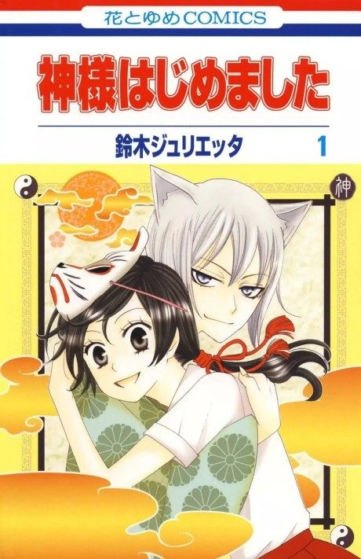
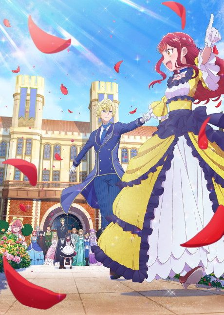
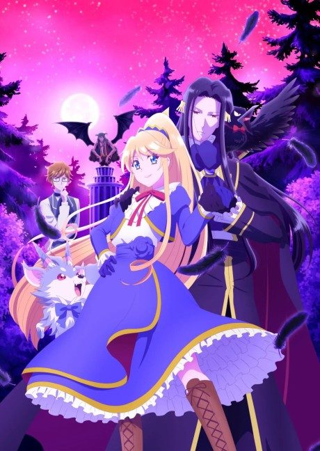
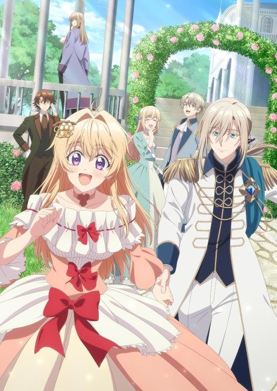

Kamisama Kiss
神様はじめました
After the anime, read the manga from Chapter 65.
8.0AniList score
—Animeter, no votes yet
25episodes, 2 seasons
2 seasons, 25 episodes
In airing order. Episode numbers on this site count straight through every season, so season 2 starts at episode 14.
1
2012 · TV
Kamisama Kiss
Episodes1–1313 ep
2
2015 · TV
Kamisama Kiss◎
Episodes14–2512 ep
Sources: AniList
More like Kamisama Kiss

Unclear7.7 Manga Ch. 718.3
Manga Ch. 718.3

Manga Vol. 47.1 Manga Ch. 767.9
Manga Ch. 767.9

Unclear7.1 Manga Ch. 427.7
Manga Ch. 427.7